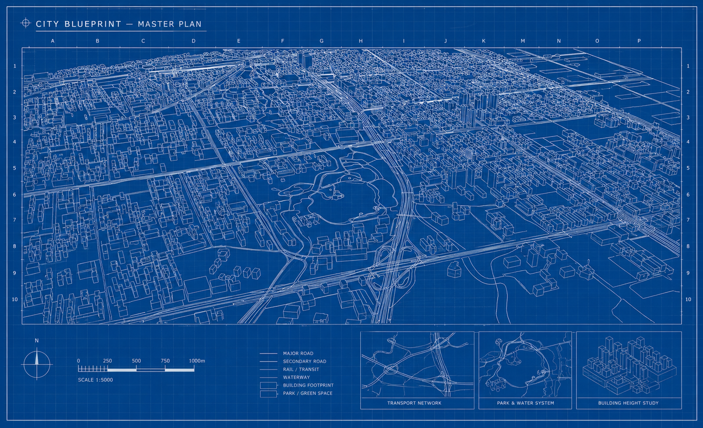
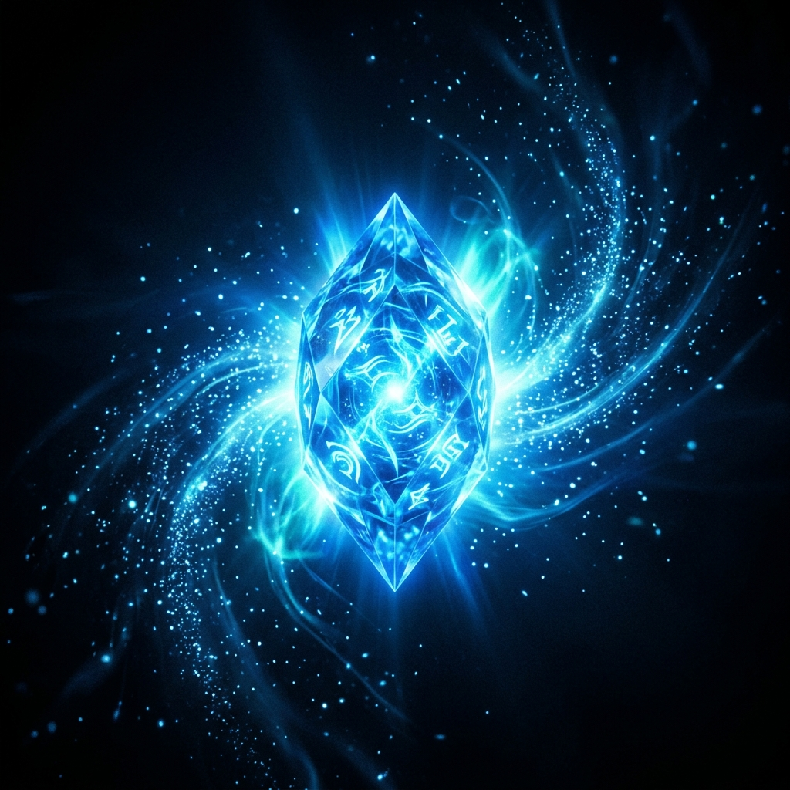
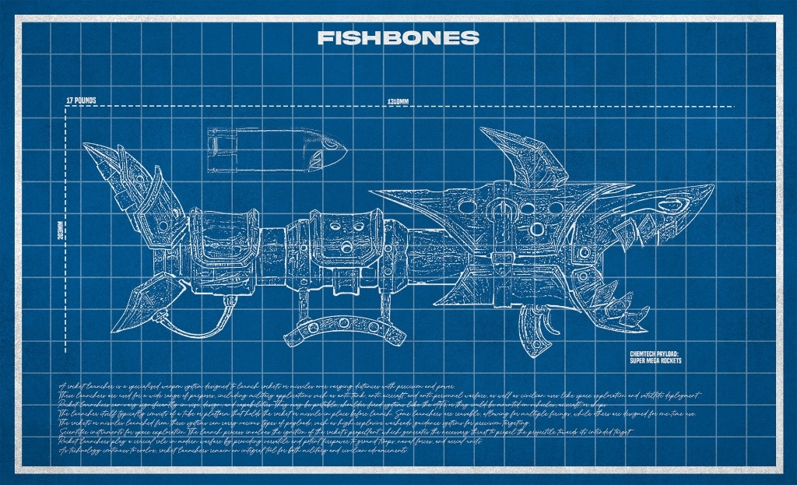

Undercity the
Kiramman Archives
Uncover the Secrets
Understanding The Layers


Decode the
Power Source
Unlocking a Hextech signature opens a new path. Each crystal resonates at a unique frequency — a cipher that only the most skilled can crack. The energy within holds coordinates to hidden passages between the twin cities.
Your task: intercept the Hextech transmission, decode the frequency matrix, and extract the routing key before the signal degrades. Time is of the essence.
FREQUENCY: 847.3 MHz // HEX_BAND_ALPHA
CIPHER: RSA-4096 + HEXTECH_LAYER
DECAY_RATE: 0.003% per cycle
STATUS: AWAITING_DECODE ██████░░░░ 62%
Prepare for The Sump

The Undercity's lowest depths hold secrets that even Zaun's enforcers fear to investigate. Shimmer refineries belch toxic fumes into corridors where data caches lie hidden among the wreckage.
The weapon schematics recovered from Tommy's Arena suggest Chemtech-enhanced payloads — code-named FISHBONES — are being used to protect encrypted dead drops throughout the Sump corridors.
Navigate through Old Hungry. Decrypt the payload. Survive the Dredge. The final cipher awaits at the deepest level.
▶ CHEMTECH WEAPON SYSTEMS ARMED
▶ PROCEED WITH EXTREME CAUTION
Begin Your Chronicle
Four stages. Two cities. One chance to prove your cryptographic mastery. Choose your path — ascend to the light of Piltover or descend into the depths of Zaun.
Start Your Chronicle